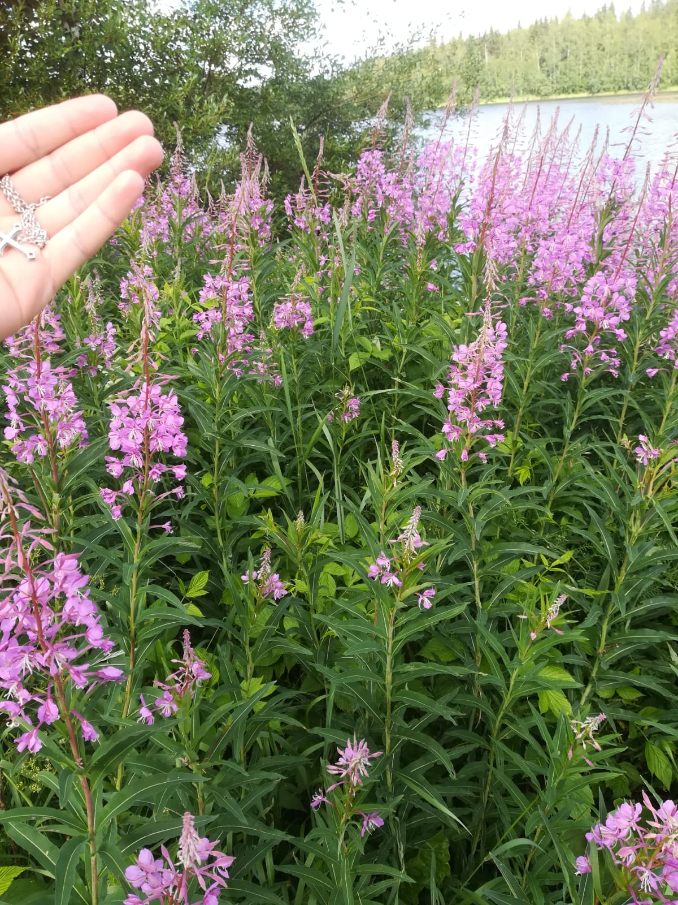

Oskun Kasvio
Oskun kasvio 2021
Klikkaa kuvaa, jos haluat nähdä kuvan isompana.
Voit vaihdella sivuja alhaalla olevasta valikosta.

Maitohorsma (Chamaenerion angustifolium)
Killinkoski, Virrat
Huopaohdake (Cirsium helenioides)
Vaskuu, Vir
Keltamaksaruoho (Sedum acre)
Reposaari, Pori
Kissankello (Campanula rotundifolia)
Killinkoski, Virrat
Voikukka (Taraxacum officinale)
Reposaari, Pori
Rikkanenätti (Rorippa sylvestris)
Kirjurinluoto, Pori
Siankärsämö (Achillea millefolium)
Kirjurinluoto, Pori
Nokkonen (Urtica dioica)
Kirjurinluoto, Pori
1
2
3
4